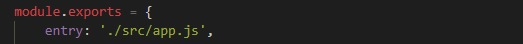
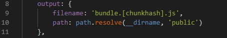
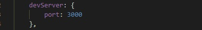
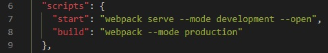
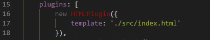
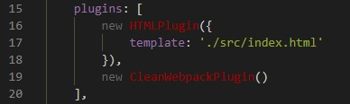
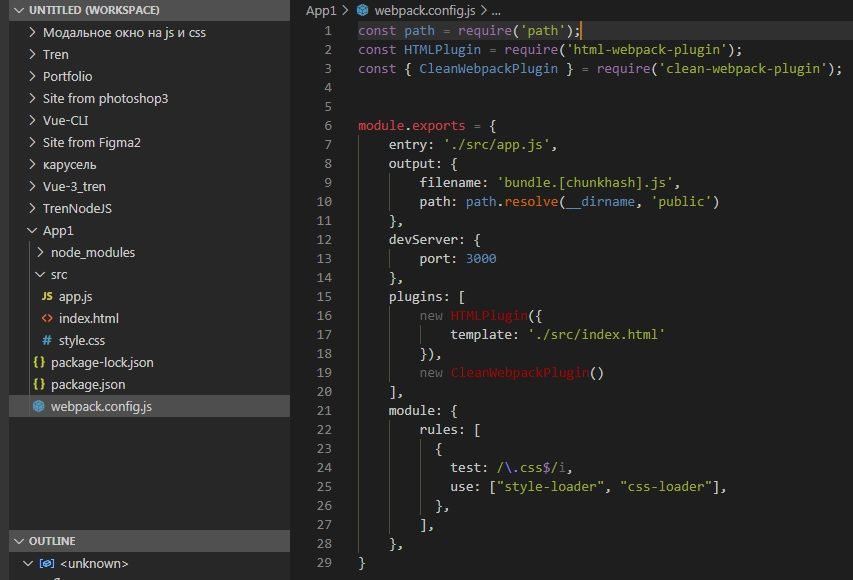

Я хочу написать какое нибудь приложение на чистом js и для этого мне понадобится небольшой помошник в виде сборщика webpack. Создаём папку проект и открываем в ней терминал. Пишем команду:
npm init
В появившихся вопросах заполним только description: js, javascript и author: Aleksandr <a@mail.ru>. Соглашаемся и появляется файл package.json. Далее нужно установить:
npm i -D webpack webpack-cli webpack-dev-server
Для того чтобы работал скачанный webpack нужно создать в папке файл webpack.config.js . Этот файл будет обработан node.js и по сути это наш файл настройки всего приложения на js. В первую очередь в этом файле прописываем точку входа. Точкой входа будет например файл app.js, который мы создадим в папке src, которую тоже в свою очередь надо создать. Папка src будет содержать все наши исходные файлы.
Далее мы должны указать конфигурационный объект output, в котором будут пути до папки, в котоую webpack нам выдаст всё наше написанное приложение.
Можно заметить что в имени файла bundle есть какие то скобки и в нём надпрись chunkhash - это для того чтобы наш файл js не кешировался браузером, хеш будет ему постоянно присваивать новое имя. Это нужно чтобы при разработке у нас всегда был актуальным файл js. Итак видно из картинки, что при run build у нас создастся новая папка public и в ней наш главный файл js bundle.js
Затем добавим настройку devServer с портом, например, 3000:
Можно теперь потестировать нашу сборку, для этого в package.json в разделе scripts напишем следующие команды:
Запустим эти команды и убедимся, что вроде всё работает. Далее можно подключить плагин html webpack plugin. Он просто берёт наш index.html из папки src и добавляет к нему подключение scripta bundle.js, т.е. на выходе в папке public в index.html уже будет автоматом подключен наш скрипт. Поэтому установим этот плагин:
npm i -D html-webpack-plugin
Как установили, идём в конфиг файл и дописываем:
также надо не забыть добавить этот index.html в папку src. Если мы будем много раз запускать npm run build, то папка public будет захламляться старыми файлами, для этого установим ещё один плагин, чтобы он чистил папку.
npm i -D clean-webpack-plugin
Затем также его получаем в переменную и подключаем в массив плагинов в конфиге:
Мы не будем заморачиваться вёрсткой, поэтому давайте возьмём готовую версткуи стили к ней. Для этого перейдём на сайт, слева нажмём example layouts -> Blog и откроется вёрстка, снизу справа нажимает просмотреть в отдельном табе, и затем когда она откроется отдельно, то правой кнопкой и идём в код страницы и копируем там вёрстку. В head мы видим что через cdn подключен файл css и js и так же есть подключение static/style.css, но этого файла у нас нет. Опять же через код страницы откроем этот css и скоприуем в нём всё. Затем в нашей папке src создадим файл style.css и в него вставим скопированное. Из index.html можно удалить строку с подключением этого css. Наш webpack не работает с css файлами, он обрабатывает только js, поэтому его нужно научить. Идём и ищем webpack css loader, переходим на сайт и копируем то что нужно вставить в webpack.config.js:

В этом модуле говорится о том, что когда webpack встречает файлы с окончанием .css то он прогоняет через плагины css loader и через style loader, поэтому нужно установить эти плагины
npm i -D css-loader style-loader
И последнее что нужно сделать это в файле app.js вставить такую строку: import './style.css'. Всё можно запускать наш проект и разрабатывать. Итоговый код в конфигурационном файле webpack.config.js выглядит так:
